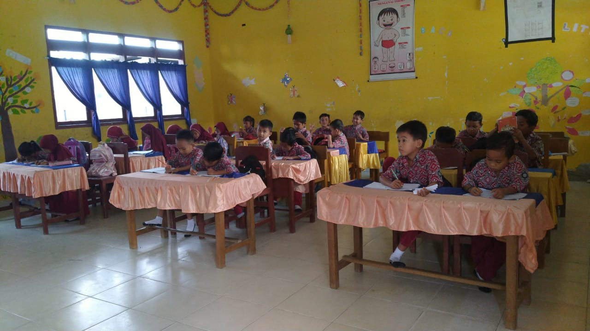
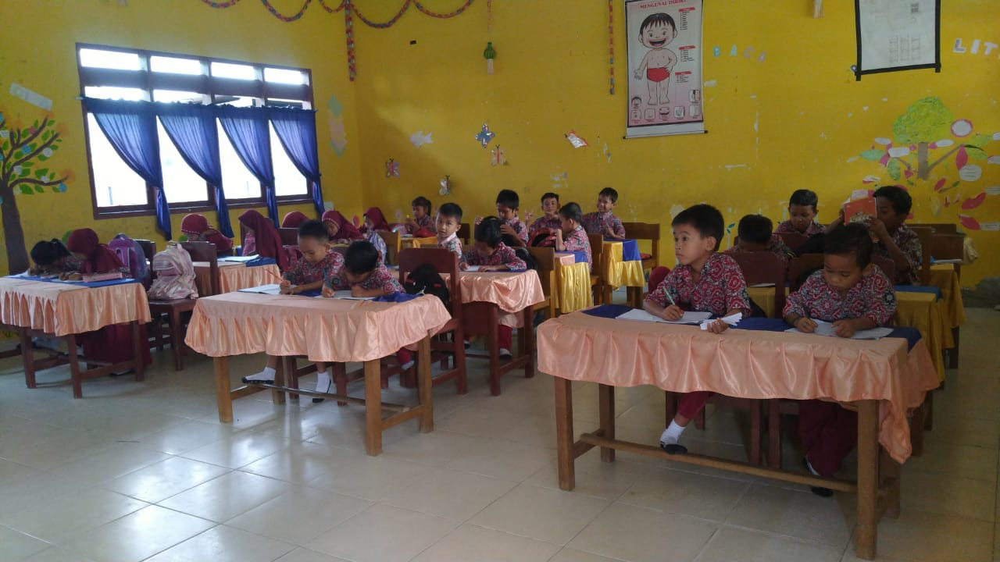

Profil Sekolah

 


Nama : SD Negeri 1 Ngapa
Alamat : Jl. Poros Kolaka Pomalaa, NGAPA, Kec. Wundulako, Kab. Kolaka, Sulawesi Tenggara
Akreditasi : B dengan Kurikulum K13/KUMER
Visi: Membina akhlak meraih prestasi dan wawasan global yang dilandasi dengan nilai-nilai budaya sesuai ajaran agama.
Misi:
- Melalui pengalaman ajaran agama
- Mengoptimalkan proses pembelajaran
- Mengembangkan pengetahuan di bidang IPTEK, Bahasa, Olahraga, dan Seni Budaya
- Menjalin kerjasama yang harmonis antar warga sekolah dan lingkungan